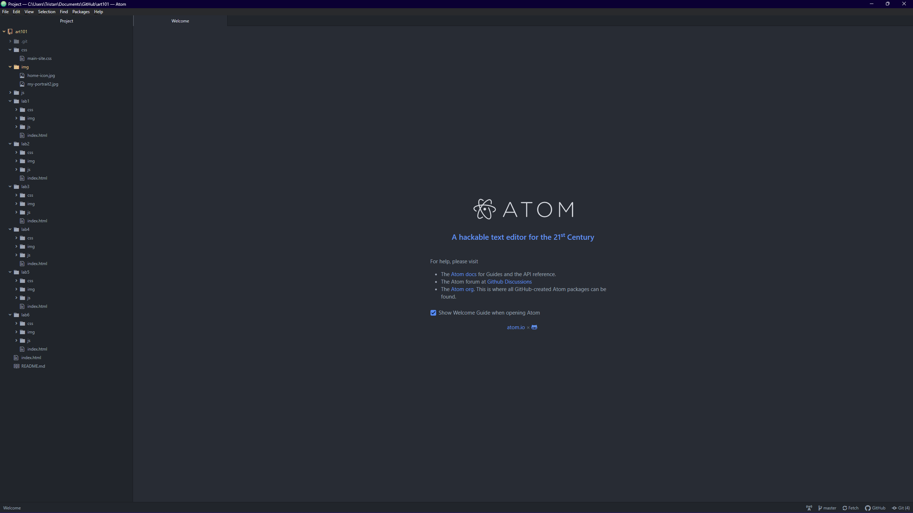
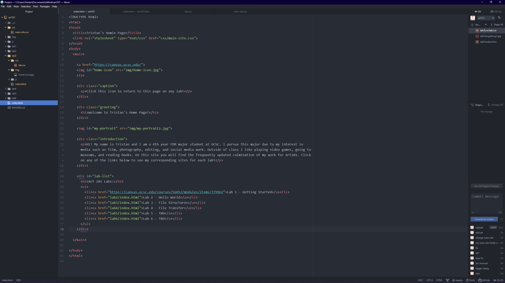
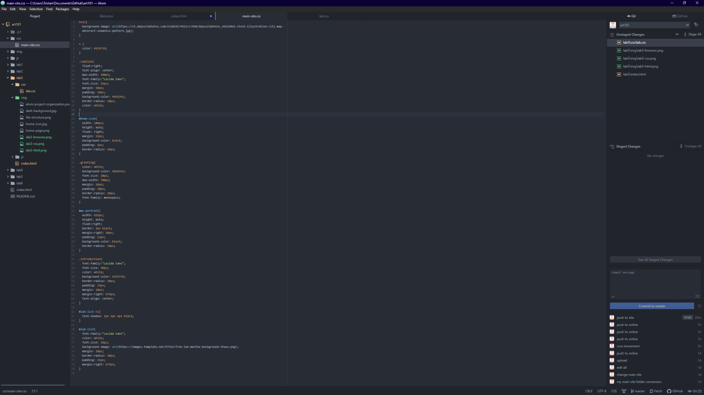
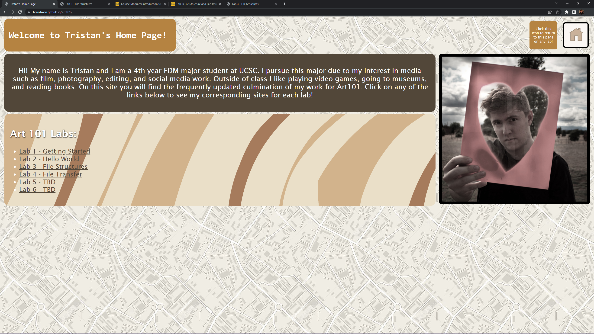
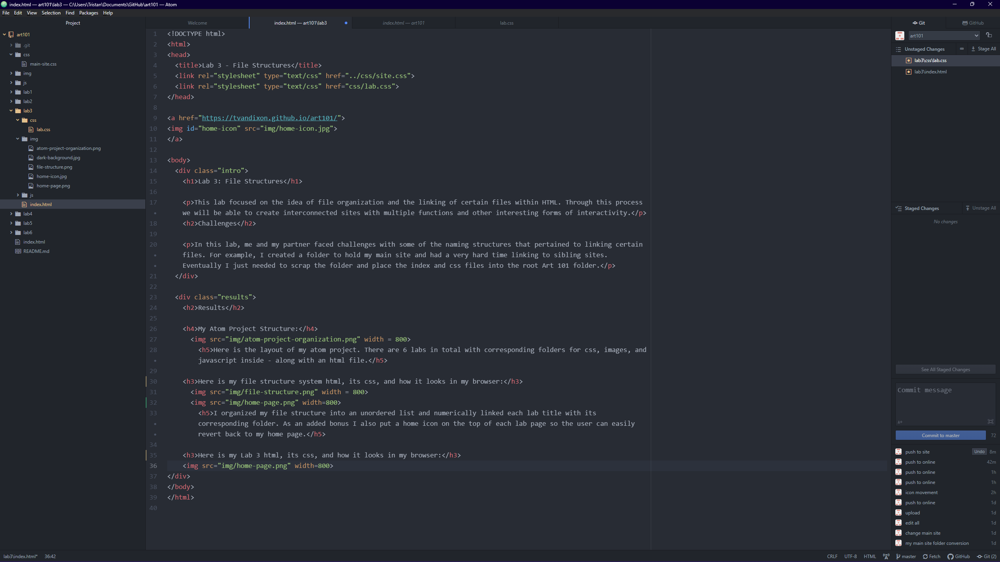
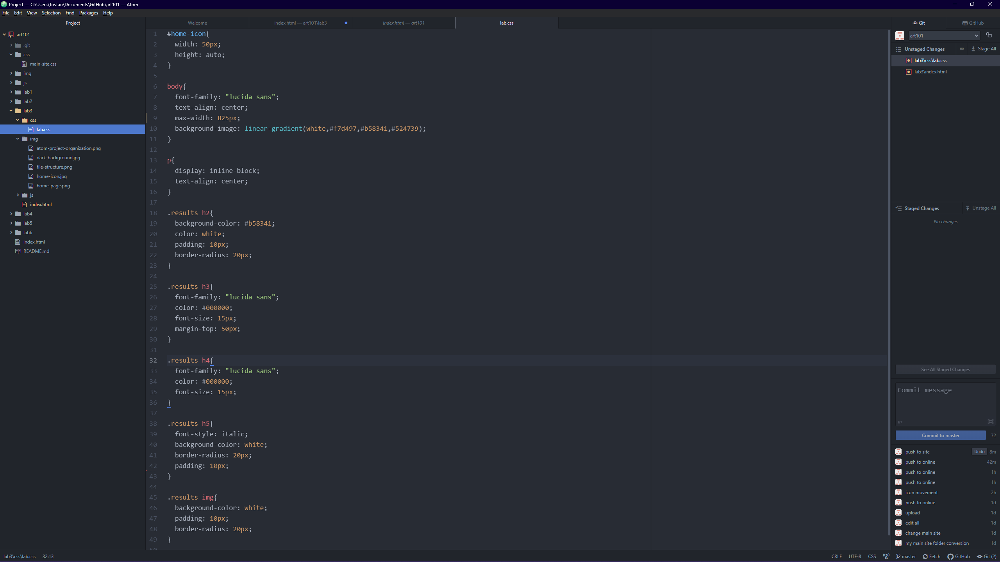
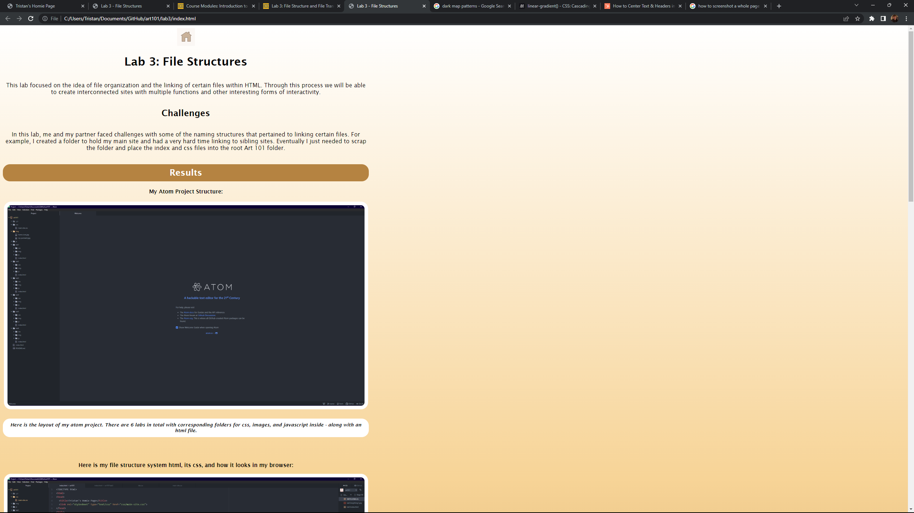

Lab 3: File Structures
This lab focused on the idea of file organization and the linking of certain files within HTML. Through this process we will be able to create interconnected sites with multiple functions and other interesting forms of interactivity.
Challenges
In this lab, me and my partner faced challenges with some of the naming structures that pertained to linking certain files. For example, I created a folder to hold my main site and had a very hard time linking to sibling sites. Eventually I just needed to scrap the folder and place the index and css files into the root Art 101 folder.
Results
1
My Atom Project Structure:

Here is the layout of my atom project. There are 6 labs in total with corresponding folders for css, images, and javascript inside - along with an html file.
2
Here is my file structure system html, its css, and how it looks in my browser:

I organized my file structure into an unordered list and numerically linked each lab title with its corresponding folder. As an added bonus I also put a home icon on the top of each lab page so the user can easily revert back to my home page.

I wanted to design my webpage with warm neutral colors. By using a variety of techniques I was able to get a layout that I thought looked good and was easy to understand

The html and css combined on my home page.
3
Here is my Lab 3 html, its css, and how it looks in my browser:

Lab 3's HTML.

Lab 3's CSS. I wanted to continue the warm tones from before so I placed a gradient in the background as well as the same colors from my home page.

The html and css for lab 3 combined on my home page.